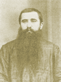
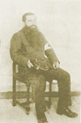
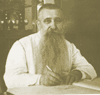

|  |
ฟ.ฮีแลร์เป็นศาสนนามของ ฟรังซัว ตูเวอเนท์ (Froncois Touvenet) ตัวฟ.ไม่ได้ย่อมาจากนามเดิม แต่ย่อมาจากภาษาฝรั่งเศส Frere ที่ตรงกับภาษาอังกฤษว่า Brother ซึ่งบัญญัติศัพท์เป็นภาษาไทยว่า เจษฎาจารย์หรือภราดา ฟ.ฮีแลร์เกิดที่ตำบลจำโปเมีย เมืองบัวเตียร์ ประเทศฝรั่งเศส เมื่อวันที่ 18 มกราคม ค.ศ.1881(พ.ศ.2424) เข้าศึกษาในโรงเรียนชั้นต้นเมื่ออายุได้ 12 ปี มีความศรัทธาในพระศาสนาจึงได้ขออนุญาตบิดามารดาเข้าอบรมในยุวนิสิตสถาน (Noviciate)ในคณะเจษฎาจารย์เซนต์คาเบรียล ที่เมืองวังลอลังต์ ซิง แซฟร์ ในมณฑลวังเด เพื่อเรียนวิชาลัทธิศาสนา วิชาครูและวิชาอื่นๆจนสำเร็จแล้วจึงประกาศอุทิศตนสมาทานศีลของคณะเซนต์คาเบรียลบรรพชาเป็นภราดาเมื่ออายุได้ 18 ปี แล้วได้เดินทางไปที่เมืองคลาเชียร์ เพื่อศึกษาปรัชญาฝ่ายศาสนาเพิ่มอีก ฟ.ฮีแลร์ ได้เข้ามาในประเทศไทยเมื่อบาทหลวงเอมิล โอคุสติน กอลมเบต์ เจ้าอาวาสวัดอัสสัมชัญ บางรักเดินทางกลับฝรั่งเศส ติดต่อกับคณะเซนต์คาเบรียลเพื่อขอคณะอาจารย์ที่มีความสามารถในการสอนมาปกครองดูแลโรงเรียนอัสสัมชัญที่กรุงเทพฯซึ่งเป็นภราดาที่มีอายุเพียง 20 ปี เมื่อมาถึงเมืองไทย ฟ.ฮีแลร์ ได้รับมอบหมายให้สอนภาษาอังกฤษและภาษาฝรั่งเศส ในขณะเดียวกัน ฟ.ฮีแลร์ก็เรียนภาษาไทยไปด้วย และเนื่องจากเรียนรู้ได้เร็วมีความรู้ภาษาไทยดีกว่าเจษฎาจารย์คนอื่นๆจึงได้ทำหน้าที่เป็นครูสอนภาษาไทย ต่อมาฟ.ฮีแลร์ได้ปวารณาตัวรับศีลบวชเป็นเจษฎาจารย์ตลอดชีวิตเมื่อวันที่ 14 มกราคม ค.ศ.1901 ฟ.ฮีแลร์เป็นผู้มีวิญญาณแห่งความเป็นครู คือจริงใจที่จะให้ความรู้แก่ศิษย์รวมทั้งอบรมความประพฤติให้เป็นคนดีมีคุณธรรมด้วย ด้วยความมุ่งมั่นที่จะถ่ายทอดความรู้ออกมาเป็นภาษาไทย ฟ.ฮีแลร์จึงพยายามเรียนภาษาไทยด้วยความเอาใจใส่ เมื่อเกิดความชำนาญจนมั่นใจแล้ว จึงได้เขียนวรรณกรรมต่างๆออกมา การเรียนภาษาไทยของ ฟ.ฮีแลร์นั้น สุลักษณ์ ศิวรักษ์(2513; 67-73) กล่าวไว้ในหนังสือวันครูว่า ฟ.ฮีแลร์ เคยเล่าให้ฟังว่าใจหนึ่งกลัวเด็กไทย ใจหนึ่งก็อยากเรียนภาษาไทย ช่วงแรกสอนภาษาอังกฤษหรือฝรั่งเศสอยู่ห้องหนึ่งนั้น หูมักพยายามเงี่ยฟังว่าห้องถัดไปเขาสอนภาษาไทยว่าอย่างไร... วิชาที่ท่านชอบสอนเป็นพิเศษคือแปลไทยเป็นอังกฤษและอังกฤษเป็นไทย ถ้าครูภาษาไทยขาดท่านมักสอนแทน ถึงกับสอนเวสสันดรชาดก ก็เคยมี กว่าท่านจะรู้ภาษาถึงขนาดอ่านมหาชาติรู้เรื่องย่อมต้องกินเวลามิใช่น้อย ดังได้กล่าวแล้วว่าสมันแรกเข้ามาเมืองไทยท่านมักเงี่ยหูฟังเด็กไทยท่อง มูลบทบรรพกิจในห้องเรียนที่อยู่ติดกัน ท่านเล่าว่าจังหวะและลีลาของภาษาไทยน่าพิศมัยมาก ท่านจึงพยายามเรียนคำศัพท์จนรู้ความหมายและบังเกิดความละอายใจ ด้วยกาพย์พระไชยพรยุสุริยาที่นำมาเป็นตัวอย่างบางตอนไม่เหมาะกับเยาวชน เช่น "...อยู่มาเหล่าข้าเฝ้า ก็หาเยาวนารี ที่หน้าตาดีๆ ทำมโหรีที่เคหา ค่ำเช้าเฝ้าสีซอ เข้าแต่หอล่อกามา หาได้ให้ภริยา โลโภพาให้บ้าใจ..." ท่านจึงมุมานะที่จะเรียนภาษาไทยจนถึงแต่งตำราสอนเด็กให้ได้ เดชะบุญได้ครูวันซึ่งต่อมาเป็นพระยาวารสิริ กับมหาทิน เป็นผู้ให้ความรู้ชั้นต้น ต่อมาได้ครูบุญและครูฟุ้ง เจริญวิทย์ คอยช่วยเหลือ ส่วนครูที่มีบุญคุณกับท่านมากที่สุดคือมหาศุข ศุภสิริ ซึ่งเป็นผู้มีความรู้ลึกซึ้งกว้าขวาง มาหศุขผู้นี้มีส่วนขัดเกลาบทร้อยกรองร้อยแก้วให้ท่านมาก เมื่อฟ.ฮีแลร์ ศึกษาภาษาไทยจนแตกฉานดีแล้ว เมื่อค.ศ.1910(พ.ศ.2453) จึงได้ลงมือแต่งหนังสือดรุณศึกษา เพื่อใช้เป็นตำราเรียนภาษาไทยชุดแรก ซึ่งสมเด็จพระบรมวงศ์เธอกรมพระยาดำรงราชานุภาพ เป็นผู้ทรงแก้ไขให้ด้วยพระองค์เอง ต่อมาเมื่อค.ศ.1913 ท่านได้ผลิตหนังสือชื่อ อัสสัมชัญอุโฆษสมัยเป็นหนังสือประจำโรงเรียน เป็นที่รวมบทประพันธ์ กาพย์ กลอน ฉันท์ ของคณะภราดาและนักเรียน เป็นเวทีแสดงความสามารถที่เด่นชัดว่านักเรียนได้รับการสั่งสอนมาอย่างดี เมื่อปีค.ศ.1914(พ.ศ.2457)เกิดสงครามโลกครั้งที่1 ฝรั่งเศสถูกโจมตีจากเยอรมัน รัฐบาลได้เรียนชาวฝรั่งเศสในต่างแดนให้กลับไปช่วยประเทศของตน ฟ.ฮีแลร์จึงกลับไปเพื่อปฏิบัติหน้าที่ในกองทัพ จนเสร็จภารกิจจึงเดินทางกลับเมืองไทยเมื่อเดือนพฤษภาคม ค.ศ.1916 ต่อมาในปีค.ศ.1933 บาทหลวงกอลมเบต์ถึงแก่มรณภาพ ศิษย์เก่าจึงประชุมกันและสร้างตึกเรียนใหม่ขึ้น ชื่อตึกกอลมเบต์ ฟ.ฮีแลร์ป่วยเป็นโรคเบาหวาน สายตาเริ่มจะมืดมืดลงจนเกือบจะมองไม่เห็น รัฐบาลฝรั่งเศสได้รับรายงานว่า ฟ.ฮีแลร์ สร้างคุณงามความดีและสร้างชื่อเสียงให้แก่ประเทศเป็นอย่างมากจึงมอบเครื่องอิสริยาภรณ์ ลียองดอนเนอร์ ให้เพื่อนเป็นเกียรติเมื่อค.ศ.1952 ณ โรงพยาบาลเซ็นต์หลุยส์ ต่อมาเมื่ออาการทึเลาบ้างก็กลับมาอยู่โรงเรียนอัสสัมชัญเหมือนเดิม ฟ.ฮีแลร์ คงจะอ่านหนังสือมา ต่อมาสายตาจึงบอดสนิททั้งสองข้าง ศิษย์จึงนำไปรักษาตัวจนหายมองเห็นเป็นปรกติ ฟ.ฮีแลร์มีชีวิตอยู่จนถึง พ.ศ.2511 อายุได้ 87 ปี จึงมรณภาพ เมื่อวันที่ 3 ตุลาคม 2511 อาศัยในเมืองไทยเป็นเวลานานถึง 67 ปี |
  |